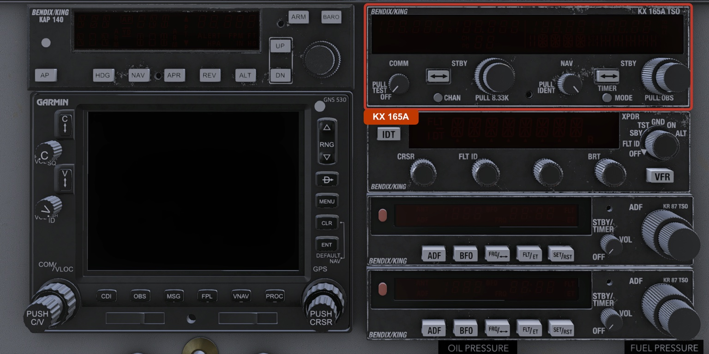
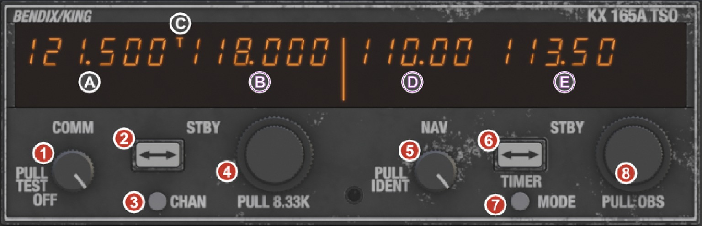
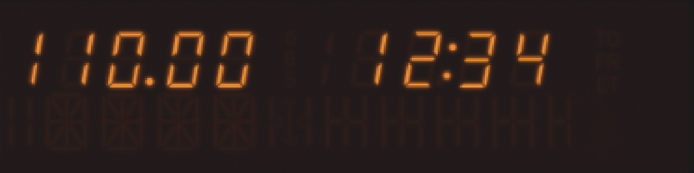

DC-3 Modern Avionics · Operating Guide
KX 165A
Bendix/King Silver Crown Plus NAV/COMM
Modern Variant Edition
Published by
This guide covers the Bendix/King KX 165A NAV/COMM as fitted to the DC-3 Modern variant. It is a standalone companion to the main DC-3 Aircraft Operating Manual, written for the pilot who wants to learn the unit cockpit-first: what each knob and button does, how to read the display, and how to fly the common tasks. You do not need any of the rest of the avionics stack to follow it.
The KX 165A is a combined VHF communication and VOR/ILS navigation radio. One box gives you a two-way COMM transceiver and a navigation receiver that can drive a VOR needle, a localizer, and a glideslope. It is the heart of the Modern variant's radio stack, and it represents the kind of upgrade a working DC-3 would have received to keep flying in modern, controlled airspace.
This is the KX 165A, the 8.33 kHz capable member of the Silver Crown Plus line. It is not the older KX 155 or KX 165. The 165A adds 8.33 kHz COMM channel spacing for European airspace, 32 programmable COMM channels, a built-in VOR/LOC converter that can drive a course indicator directly, five NAV display modes, and a built-in timer. Every one of those features is modeled.
In this aircraft the KX 165A is wired to X-Plane's second radio stack: it is your COM 2 and NAV 2. That matters when you set up navigation sources or compare it to anything else in the panel.

| Parameter | Specification |
|---|---|
| Frequency range | 118.000 – 136.975 MHz |
| Channel spacing | 25 kHz (760 channels), or 8.33 kHz (2,280 channels) |
| Transmit power | 10 watts |
| Active / standby | Yes, with transfer (flip-flop) button |
| Programmable channels | 32 COMM presets |
| Parameter | Specification |
|---|---|
| Frequency range | 108.00 – 117.95 MHz |
| Channel spacing | 50 kHz (200 channels) |
| Capability | VOR bearing, ILS localizer, ILS glideslope |
| Converter | Built-in VOR/LOC converter (drives the VOR/ILS course indicator directly) |
| Display modes | Five, selected with the MODE button |
| Built-in timer | Elapsed (count-up) and countdown |
| Parameter | Specification |
|---|---|
| Supply | 27.5 VDC, DC Radio Bus |
| Current draw | 0.6 A receive, 6.0 A transmit |
| Required for power | Avionics master on, electrical power present, COM/NAV (VHF transceiver) breaker closed |
The face splits cleanly down the middle. The left half is COMM, the right half is NAV, and a bright divider bar separates them on the display. Each half has a large display window, a transfer button, and a pair of concentric tuning knobs. The smaller printed labels around the knobs (PULL TEST, PULL 8.33K, PULL IDENT, PULL OBS) are pull functions, described below.

| # | Control | What it is |
|---|---|---|
| 1 | COMM ON/OFF/VOL · PULL TEST | Left knob. Sets COMM listening volume. Pull for squelch test. |
| 2 | ⇄ (COMM transfer) | Swaps the active and standby COMM frequencies. |
| 3 | CHAN | Enters/exits COMM channel mode (the 32 presets). |
| 4 | COMM knob · PULL 8.33K | Dual concentric tuning knob. Outer = MHz, inner = kHz. Pull the inner knob for 8.33 kHz spacing. |
| 5 | NAV ID/VOL · PULL IDENT | Sets NAV listening volume. Pull to enable the station identifier (Morse ident) audio. |
| 6 | ⇄ (NAV transfer) · TIMER | Swaps the active and standby NAV frequencies. In Timer mode it resets and starts/stops the timer instead. |
| 7 | MODE | Cycles the NAV display through its five modes. |
| 8 | NAV knob · PULL OBS | Dual concentric tuning knob. Outer = MHz, inner = kHz. Pull the inner knob to set the OBS course. |
The leftmost knob sets how loud the COMM receiver is in your headset. Turn it down to lower the COMM audio; its OFF detent at the very bottom is the unit's power switch, covered just below. Pull the knob out to run a squelch test: the receiver's automatic squelch is defeated and the set opens up, so you hear the raw background static, the rushing open-receiver hiss. Push it back in and the squelch re-engages, and the channel goes quiet again. The static follows the volume knob, louder as you turn it up, quieter toward the OFF detent.
This knob is also the unit's master power switch. At its OFF detent, fully counter-clockwise, it powers the whole unit down: COMM, NAV, and the display. So the KX 165A needs three things to come alive: the avionics bus live (avionics master on, electrical power present), the COM/NAV breaker closed, and this knob off the OFF detent. Just above OFF the unit is powered but the COMM audio is still low; keep turning up for volume.
The COMM frequency is set with the dual concentric knob. The outer knob steps the megahertz digits (the part left of the decimal). The inner knob steps the kilohertz digits (the part right of the decimal) in 25 kHz increments. Tuning always changes the standby frequency, never the active one. The frequency wraps around at the ends of the band, so you can spin past 136.975 straight back to 118.000.
Pull the inner knob out to engage 8.33 kHz spacing. The standby frequency snaps to the nearest valid 8.33 kHz channel, and the inner knob now steps through the finer 8.33 kHz channel set. Push the knob back in to return to 25 kHz spacing.
The double-arrow button between the two COMM windows swaps active and standby. Whatever you tuned in the standby window becomes the active frequency you transmit and receive on, and the old active frequency drops into standby. This is how you change COMM frequencies in one motion: pre-tune the next frequency in standby while still talking on the current one, then flip.
The CHAN button enters and exits COMM channel mode, where you work with the 32 programmable presets. See Operating Procedures for storing and recalling channels.
The NAV frequency is set the same way as COMM: the outer knob steps megahertz, the inner knob steps kilohertz in 50 kHz increments, and tuning changes the standby frequency. The band wraps at its ends.
Pull the inner knob out for OBS. The display jumps to CDI mode and the NAV knobs now set your selected course: the outer knob moves it in 10° steps, the inner knob in 1° steps. Push the knob back in to return the NAV knobs to frequency tuning.
This knob sets the NAV receiver's audio volume. Pull it out to route the station's Morse identifier into your audio so you can confirm you are tuned to the right navaid. Push it in to silence the ident. It starts pulled out (ident audible).
MODE steps the NAV display through its five modes in order, then wraps back to the start. The modes are covered in The Five NAV Modes.
In the four navigation modes, the double-arrow button swaps active and standby NAV frequencies, exactly like the COMM transfer. In Timer mode it changes job: it becomes the timer's reset / start / stop control.
The display is a single orange readout split into a COMM half and a NAV half by a bright vertical divider. Reading left to right:
| Field | Location | Shows |
|---|---|---|
| Active COMM | Far left | The frequency you transmit and receive on. Format 1XX.XXX. |
| Standby COMM | Left, inboard | The pre-tuned frequency waiting to be transferred. |
| T indicator | Left, near the active COMM | Lit while you are transmitting (mic keyed). |
| Active NAV | Right of the divider | The navaid frequency you are receiving. Format 1XX.XX. |
| Secondary NAV window | Far right | Mode-dependent: standby frequency, OBS course, bearing, radial, or timer. |
The secondary NAV window is the one that changes with the MODE button. In the default mode it simply shows the standby NAV frequency. In the other modes it shows course, bearing, radial, or the timer, each of which is described next.
When you press CHAN, the standby COMM window changes to show the channel: a "CH" label with the channel number (or "PG" while you are programming a preset), alongside the frequency stored in that channel.
Pressing MODE cycles the NAV side of the unit through five display modes. The active NAV frequency stays visible the whole time on the left of the NAV section; only the secondary window on the far right changes.

| Mode | Secondary window shows | Use it for |
|---|---|---|
| Standby frequency | The standby NAV frequency | Normal tuning. The default mode. |
| CDI | The selected OBS course plus a deviation scale | Setting and flying a VOR radial or ILS inbound course. |
| Bearing-To | Magnetic bearing TO the station, with "to" | Quick situational awareness: which way is the navaid. |
| Radial-From | The radial FROM the station, with "Fr" | Knowing which VOR radial you are on. |
| Timer | Elapsed or countdown time, MM:SS | Timing a holding pattern, an approach leg, or a trip leg. |
The default mode. The secondary window shows the standby NAV frequency, and the NAV knobs tune it. This is where you live most of the time.
CDI mode shows your selected course (the OBS setting) as a three-digit number on the top line, and below it a course-deviation scale of its own: a stepped left/right needle against a dotted scale, with a TO/FROM marker in the centre. On a localizer the top line reads LOC instead of a course, and the centre marker becomes a >< symbol. You can reach this mode either by pressing MODE until it appears, or by pulling the NAV inner knob (PULL OBS), which jumps straight here and hands the NAV knobs to course selection. The same deviation also drives the aircraft's VOR/ILS course indicator, the round course head this radio feeds, so you can read it on the unit or on the course head. When the signal is too weak to use, the window shows FLAG in place of the needle.
With a usable VOR signal, this mode shows the magnetic bearing to the station, marked "to". It answers "which direction is the navaid from me right now," independent of any course you have dialed in. Without a usable signal it shows dashes (- - -), with the "to" tag still lit.
This mode shows the radial you are on, that is, the bearing from the station, marked "Fr". It is the reciprocal of the Bearing-To value. Useful for position reports and for knowing which published radial you are tracking. Without a usable signal it shows dashes (- - -), with the "Fr" tag still lit.
The built-in timer is a stopwatch and a countdown clock in one. It is covered step by step in Operating Procedures. The key behavioral note: in Timer mode the NAV transfer button stops being a frequency swap and becomes the timer's reset/start/stop control, and the NAV knobs (while the timer is stopped) set a countdown time.
You never tune the active frequency directly. Pre-tune in standby, then transfer. This lets you set up the next frequency while still working the current one.
You will only hear the test hiss when the radio is powered and its audio is actually routed to you: the avionics bus on, the VHF transceiver breaker in, the COMM volume up off its OFF detent, and COM 2 selected on the audio panel (the COM2 switch on the microphone panel up, or ON). Cold and dark, a pulled transceiver breaker, the volume fully down, or COM 2 deselected on the audio panel all keep it silent. Remember the KX 165A is your COM 2 radio.
8.33 kHz channel spacing is required in much of European airspace above certain levels. For most of the world, 25 kHz is all you need, and the standby will read in the familiar three-decimal format.
The KX 165A holds 32 programmable COMM presets. In this release the presets reset to their defaults each time the aircraft is reloaded; cross-session persistence is planned for a later update. Use them for the frequencies you tune again and again: your home field, common UNICOM, the en-route centers you work.
To recall a stored channel:
To program a channel:
As a stopwatch (count up):
As a countdown:
The timer counts up when its preset is 00:00, and counts down when you have dialed in any non-zero time. Leave it at zero for a holding-pattern stopwatch, or set a time for an approach leg. The timer only runs while the unit is powered.
Key the microphone as normal to transmit on the active COMM frequency. The T indicator lights while you are keyed. Release to return to receive.
If the microphone is keyed continuously for more than 33 seconds, the unit treats it as a stuck mic. The transmitter is judged stuck, the T indicator drops, and a stuck-mic alert appears until you release the key. This protects the frequency from a jammed transmitter blocking everyone else. Release the mic to clear it.
The KX 165A channels a separate DME, the KDI 572, from its NAV frequency. When you tune a VOR/DME or an ILS/DME on the NAV side, the paired DME is selected automatically and its distance, groundspeed, and time-to-station appear on the DME's own indicator, not on the KX 165A. The KX 165A itself does not have a DME readout or a DME-hold button on its face; for DME operation and DME hold, see the KDI 572 guide.
The KX 165A can be opened in its own floating window, handy for tuning on a second monitor, working it in VR, or just getting a closer look. In X-Plane's keyboard or joystick settings, find the command named "Toggle KX 165A popup" and bind it to a key or controller button. Press it to open the window; press it again to close it.
Inside the window every control works exactly as it does in the cockpit: click the buttons, and roll the mouse wheel over a knob to turn it. Click the unit's nameplate to dock or undock the window. Docked, it fills the window edge to edge; undocked, it floats as an ordinary window you can drag and resize anywhere on screen, with the bezel letterboxed so the faceplate keeps its proportions.
The KX 165A also appears in the unified Avionics Stack popup, a single window that shows the whole Modern radio stack at once with every screen live and every control working. The stack and this unit's own popup coexist, and both stay in sync with the panel, so you can run whichever suits your setup. The Avionics Stack is covered in the main DC-3 Aircraft Operating Manual.
A working, powered KX 165A shows a steady orange readout: active and standby COMM on the left, active NAV plus the selected secondary window on the right, with the bright divider between them. The T indicator is dark unless you are transmitting.
| Indication | Meaning | What to do |
|---|---|---|
| Display is dark | No power. Avionics master off, no electrical power, or the COM/NAV breaker is open. | Restore avionics power and check the breaker. |
| No station identifier when PULL IDENT is out | You are not receiving a usable navaid, or the volume is down. | Recheck the frequency, the volume, and that you are within range of the station. |
| Bearing-To / Radial-From blank or static | No usable VOR signal. | These modes need a received VOR. Confirm tuning, range, and terrain. |
| T indicator stays on / stuck-mic alert | The mic has been keyed past 33 seconds. | Release the microphone. The alert clears when the key is released. |
NAV reception in the DC-3 is modeled with terrain-aware propagation, not a simple in-range / out-of-range switch. A station behind a ridge can fade or drop even when the map says you are within range. If a navaid is weak, climbing or repositioning to clear the terrain often restores it.
LES DC-3 · KX 165A NAV/COMM Operating Guide · DC-3 Modern Avionics Series
Leading Edge Simulations · Published by X-Aviation